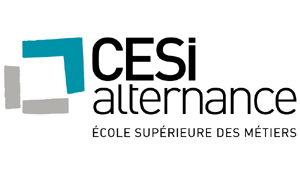
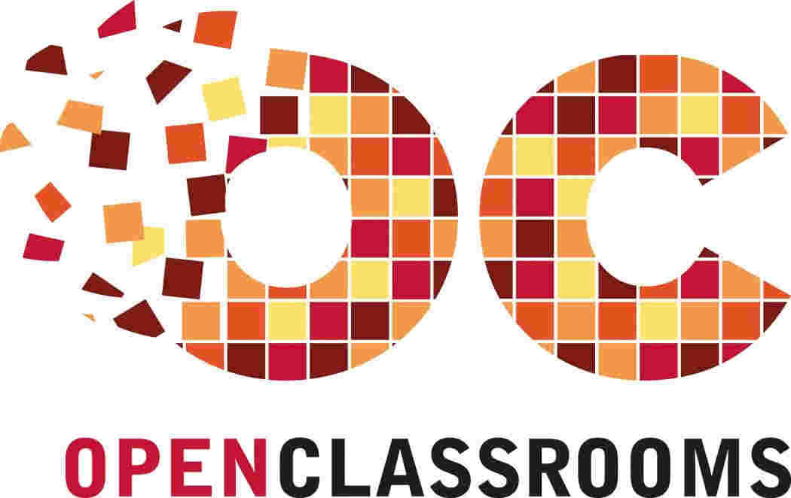
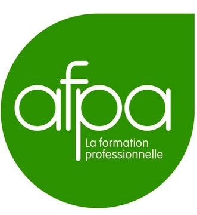
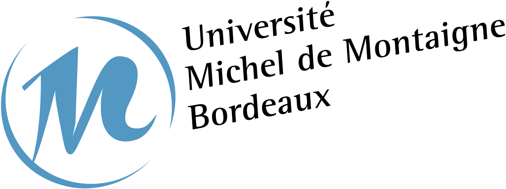
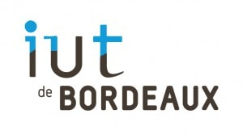
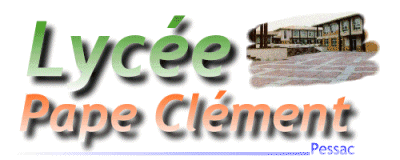

FORMATIONS
CESI
2017

Développeur Intégrateur Web / Mobile
Rigoureux : rédiger un cahier des charges avec un client. Le former. Faire des pages d'administration. Adapter un site web pour appareil ou écran. Présenter des projets. Répartir des tâches et les planifier. Faire de la veille technologique. Rédiger des articles. Utiliser des frameworks.
Certificat OpenClassrooms
2014

"Concevez votre site web avec PHP et MySQL"
Méthodique : Acquérir la notion d'objet et d'architecture MVC. Maîtriser les outils préconisés. Adapter mes acquis en C++ et algorithmique. Respecter conventions, normes et sécurité.
AFPA
2012 ; 2007

Technicien d'Assistance en Informatique
Altruiste : Adapter mon niveau de langage. Gérer et archiver des interventions. Utiliser des applications d'intervention à distance. Configurer le serveur d'un parc informatique. Installer plusieurs système d'exploitation sur un PC. Diagnostiquer et dépanner du matériel. Faire des sauvegardes. Habilitation électrique.
Câbleur aéronautique
Manuel : Gainer des câbles blindés dans des avions. Utiliser des outils de dénudage et de soudage. Connaître la nomenclature. Tresser, sertir, et nouer.
Université Michel de
Montaigne
1998 - 2001

Niveau Deug LEA Anglais/Espagnol
Mobile et littéraire : Approfondir anglais et espagnol. Étudier civilisations espagnoles et anglais des affaires. Résumer en anglais avec un nombre de mots donné. Commenter des textes dans les deux langues. Traduire et interpréter. Acquérir et distinguer les termes américains et anglais. Voyager.
IUT
1995 - 1998

Génie électrique et informatique industrielle - un an
Démonstratif : Étudier des mathématiques en électronique et électricité. Réaliser en binôme des circuits intégrés selon études et schémas à dessiner. Tester, observer et commenter des circuits et composants électroniques avec oscilloscopes et multimètres. Utiliser la documentation.
Génie informatique - deux ans
Logique : Étudier des mathématiques de logique, faire des théorèmes logiques. Factoriser des formules logiques. Concevoir des algorithmes et les détailler. Approfondir les rudiments de la programmation. Maîtriser les langages essentiels. Analyser et structurer des données. Réaliser et documenter des projets. Étudier l'anglais technique et courant.
Lycée Pape Clément
1995

Bac S(ti)
Studieux : pratique de la programmation et réalisation de ma première application de bureau, qui aura été confirmée avec Universoft.